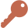

حرف الميم
الدرس 2 من 6 — القراءة
درسنانتعلّم اليوم الحرف م. اضغط على الحرف لتسمع اسمه، ثمّ على المقاطع لتسمع صوته، ثمّ اقرأ الكلمات مقطعاً مقطعاً.
حرف الميم
اضغط واستمع: الحركات
اضغط واستمع: المقاطع الطويلة والساكنة
أشكال الحرف في الكلمة
مـفي أوّلها
ـمـفي وسطها
ـمفي آخرها
مَوْزٌ

مِفْتَاحٌ
مَدْرَسَةٌ
أُطبّق
1استمع إلى الكلمة: بأيّ حرف تبدأ؟
2استمع، ثمّ اختر الحرف الذي تسمعه:
3استمع، ثمّ اختر المقطع الصحيح:
4اختر الصورة التي تبدأ بحرف م:
إجابات صحيحة من أول محاولة:
أتمرّن أكثر
أستمع، ثمّ أكتب ما أسمع:
أستمع، ثمّ أكتب ما أسمع:
✓ أنهيتَ هذا الدرس
الرسوم: Twemoji (CC-BY 4.0) وFluent Emoji من Microsoft (MIT). الأصوات: صوت عربي اصطناعي.